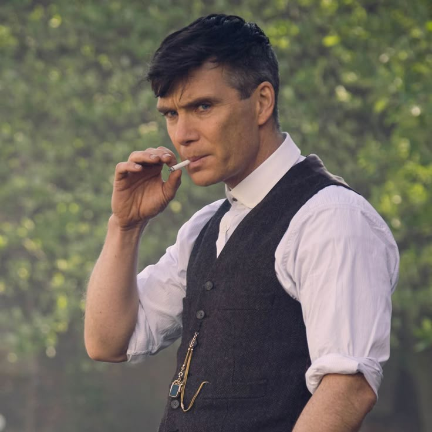

PEAKY BLINDERS
Peaky Blinders is a British period crime drama television series created by Steven Knight. Set in post-World War I Birmingham, England, the show follows the exploits of the Shelby crime family, led by the charismatic and cunning Tommy Shelby. Known for its stylish visuals, intense storytelling, and powerful performances, Peaky Blinders has become one of the most acclaimed British TV series of the 21st century.
Peaky Blinders is a British period crime drama television series created by Steven Knight...
 The series begins in 1919, focusing on the rise of the fictional Peaky Blinders gang — based loosely on a real street gang from the late 19th century. The Shelbys, led by Tommy Shelby, navigate power struggles, political corruption, and rival gangs while trying to move up in society. The show blends historical realism with dramatic tension and unforgettable characters.
“I'm not violent. I'm not. I'm not a violent man. But we are at war, and you cannot insult me.”
— Tommy Shelby
Each season builds on the growing ambitions of Tommy Shelby, portrayed brilliantly by Cillian Murphy, whose transformation from war veteran to ruthless kingpin is at the heart of the series. The supporting cast includes Helen McCrory as Polly Gray, Paul Anderson as Arthur Shelby, and Tom Hardy as Alfie Solomons — each bringing depth and intensity to the story.
The show’s aesthetic — sharp suits, razor blade caps, and moody cinematography — sets it apart visually. Combined with a modern soundtrack featuring artists like Nick Cave and the Bad Seeds, Arctic Monkeys, and Radiohead, Peaky Blinders feels both nostalgic and contemporary.
“You're looking at a man who's been shot twice, stabbed six times, poisoned once, and survived a bloody war. So whatever trouble you think is coming... it won't be the worst thing I've seen.”
— Tommy Shelby
Peaky Blinders received widespread critical acclaim and has a loyal global fanbase. It was praised for its writing, direction, and especially the performances of its lead actors. The final season concluded the Shelby saga in dramatic fashion, leaving fans eager for the upcoming feature film that will wrap up the story definitively.
Main Cast
Cillian Murphy
Томас Шелби
Paul Anderson
Артур Шелби
Helen Mirren
Эсме Шелби

Tom Hardy
Альффи Шелби
Annabelle Wallis
Грейс Шелби